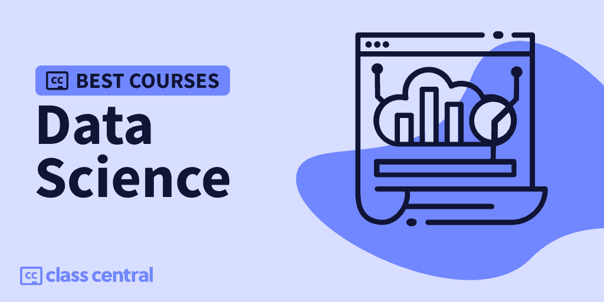
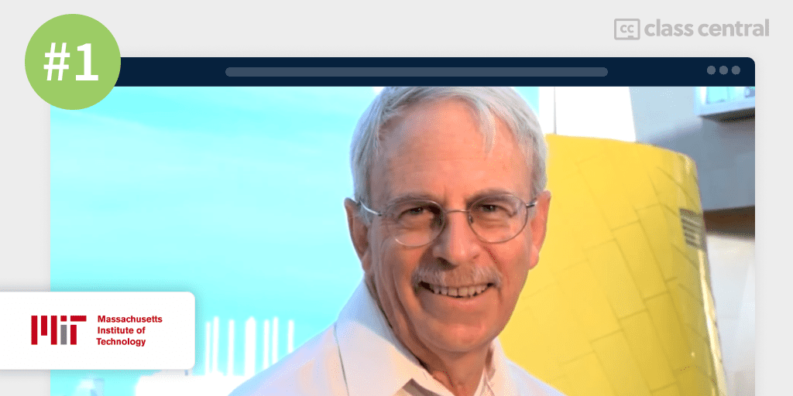
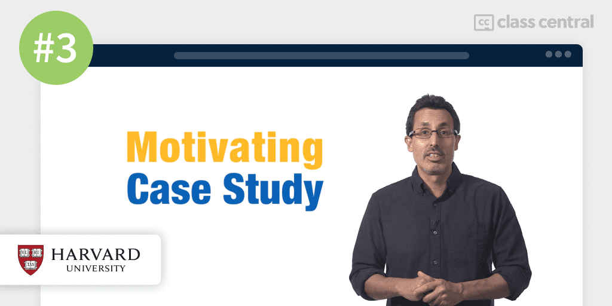
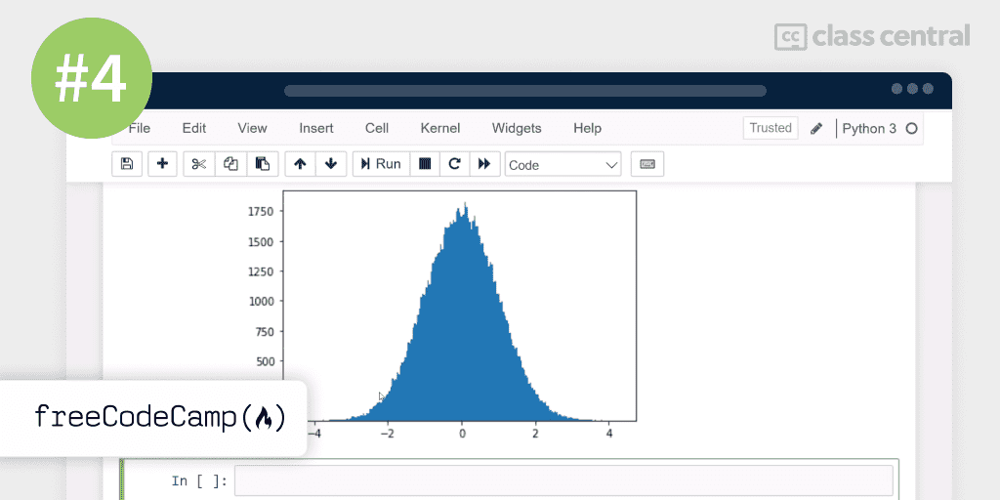
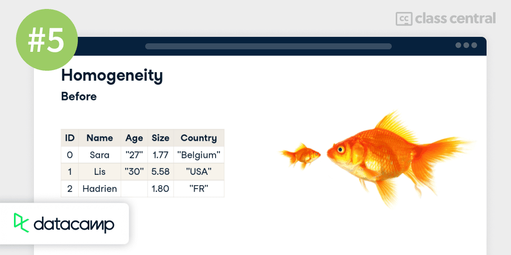
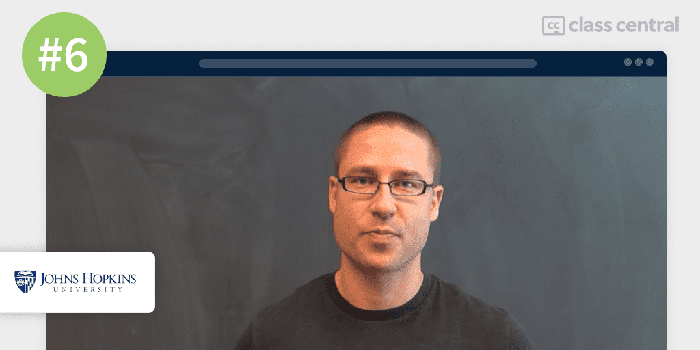
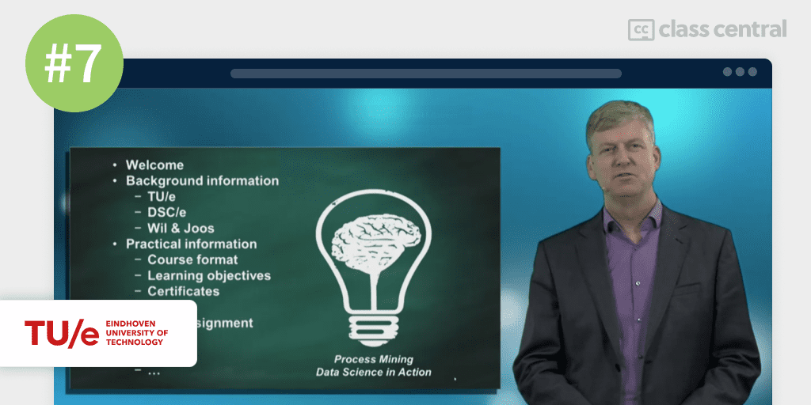
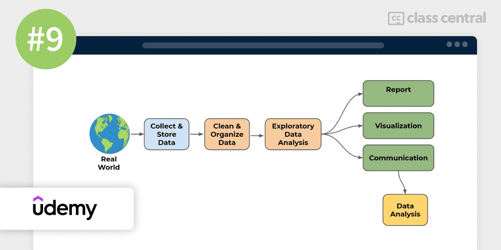
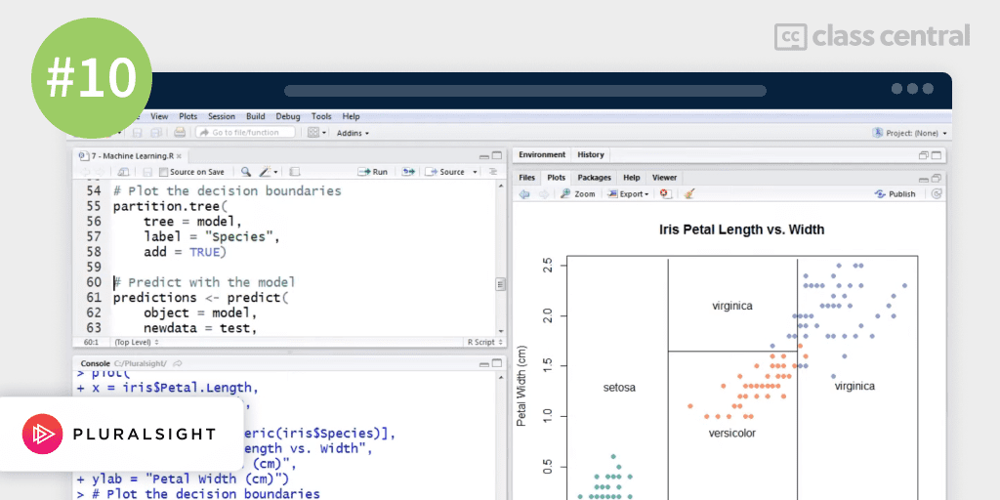

2023 में लेने के लिए 10 सर्वश्रेष्ठ डेटा विज्ञान पाठ्यक्रम
सही पाठ्यक्रम खोजें और सर्वश्रेष्ठ ऑनलाइन डेटा विज्ञान पाठ्यक्रमों के लिए हमारे व्यापक गाइड के साथ एक डेटा प्रो बनें।

क्या आप डेटा विज्ञान की रोमांचक दुनिया में कूदने के लिए तैयार हैं?
यहाँ मेरे शीर्ष पिक्स हैं।
| अवधि | कार्यभार | संक्षिप्त |
| 1.कम्प्यूटेशनल सोच और डेटा विज्ञान का परिचय (MIT) | 100-140 घंटे | डेटा साइंस फंडामेंटल पर सुपर व्यापक और कठोर पायथन कोर्स |
| 2.नींव: डेटा, डेटा, हर जगह (Google) | 20 घंटे | एक डेटा साइंस कोर्स जो आपको डेटा एनालिटिक्स में कैरियर के लिए तैयार करता है |
| 3.डेटा विज्ञान: आर मूल बातें (हार्वर्ड) | 16 घंटे | गहन पाठ्यक्रमों से निपटने के लिए आर में एक मजबूत नींव बनाता है |
| 4.डेटा विज्ञान के लिए पायथन (Freecodecamp) | 12 घंटे | यदि आप पायथन को नहीं जानते हैं, लेकिन बहुत अच्छा है, लेकिन डेटा विज्ञान करना चाहते हैं |
| 5.सभी के लिए डेटा विज्ञान (डेटाकैम्प) | चार घंटे | डेटा विज्ञान और इसके अनुप्रयोगों को शामिल करने के लिए उत्कृष्ट पाठ्यक्रम शामिल नहीं है |
| 6.डेटा साइंस में एक क्रैश कोर्स (जॉन्स हॉपकिंस) | 8 घंटे | गैर-तकनीकी व्यवसायी लोगों के लिए सर्वश्रेष्ठ डेटा विज्ञान पाठ्यक्रम डेटा वैज्ञानिकों के साथ प्रबंधन या काम करने के लिए कोई कोडिंग शामिल नहीं है |
| 7.प्रक्रिया खनन: कार्रवाई में डेटा विज्ञान (Eindhoven Tech) | 22 घंटे | डेटा विज्ञान पाठ्यक्रम जो बिना कोडिंग के प्रक्रिया खनन को सिखाता है |
| 8.डेटा विज्ञान गणित कौशल (ड्यूक) | 13 घंटे | डेटा विज्ञान के लिए कोर गणितीय विचारों का अवलोकन |
| 9.मशीन लर्निंग के लिए पायथन | 44 घंटे | पायथन में पहले से ही आत्मविश्वास के लिए डेटा विज्ञान और मशीन सीखने पर उत्कृष्ट पाठ्यक्रम |
| 10.आर के साथ डेटा विज्ञान (pluralSight) | 3 घंटे | आर के लिए अच्छा परिचयात्मक पाठ्यक्रम |
डेटा साइंस क्या है?
डेटा विज्ञान एक ऐसा क्षेत्र है जो विशिष्ट टिप्पणियों से सामान्य सिद्धांतों को निकालने के लिए वैज्ञानिक प्रेरण का उपयोग करता है।डेटा की विशाल मात्राडिजिटल युग में दैनिक रूप से उत्पन्न, मनुष्यों के लिए उन सभी के माध्यम से रुझान की खोज करना असंभव होगा।
हालांकि, डेटा वैज्ञानिकों को यह सुनिश्चित करने की आवश्यकता है कि मशीनों को खिलाया गया डेटा साफ है और सही मशीन को चुना जाता है, और उन लोगों को निष्कर्षों को संवाद करने के लिए जो तकनीकी रूप से इच्छुक नहीं हो सकते हैं।लोकप्रियता प्राप्त करना, के रूप में किया जा रहा है21 वीं सदी का सेक्सी नौकरीहार्वर्ड द्वारा और एक औसत वेतन का भुगतान करके$ 120k प्रति वर्षसंयुक्त राज्य अमेरिका में।
डेटा एनालिटिक्स, डेटा साइंस का एक सबसेट, भी कर्षण प्राप्त कर रहा है, और पायथन और आर क्षेत्र में उपयोग की जाने वाली सबसे लोकप्रिय प्रोग्रामिंग भाषाएं हैं।
डेटा साइंस के साथ मेरा अनुभव
मैंने अपने दोस्त और सहकर्मी के सहयोग से इस रैंकिंग का निर्माण किया@manoel.
हम दोनों कंप्यूटर विज्ञान की पृष्ठभूमि से आते हैं और ऑनलाइन शिक्षार्थी हैं, जो हमारे बीच लगभग 45 MOOC पूरा कर चुके हैं।ऑनलाइन स्नातक कंप्यूटर विज्ञान में स्नातक, जबकि मैं वर्तमान में कंप्यूटर विज्ञान में अपनी नींव पूरी कर रहा हूं।

पाठ्यक्रम रैंकिंग कार्यप्रणाली
मैंने पिछले सर्वश्रेष्ठ पाठ्यक्रम गाइडों में इस्तेमाल की जाने वाली अब और परीक्षण की गई कार्यप्रणाली के बाद इस रैंकिंग का निर्माण किया (आप उन सभी को यहाँ पा सकते हैं)।
- शोध करना:मैंने क्लास सेंट्रल के डेटाबेस का लाभ उठाकर शुरू किया100k ऑनलाइन पाठ्यक्रमऔर 200k समीक्षा।2,900 डेटा विज्ञान पाठ्यक्रमरेटिंग, समीक्षा और बुकमार्क द्वारा।
- मूल्यांकन करना:मैंने क्लास सेंट्रल, रेडिट और कोर्स प्रदाताओं पर समीक्षाओं के माध्यम से पढ़ा कि यह समझने के लिए कि अन्य शिक्षार्थियों ने प्रत्येक पाठ्यक्रम के बारे में क्या सोचा और इसे अपने अनुभव के साथ एक के रूप में संयुक्त कियासिखाने वाला.
- चुनना:यदि वे मूल्यवान और आकर्षक सामग्री प्रस्तुत करते हैं, तो अच्छी तरह से बनाए गए पाठ्यक्रमों को चुना गया था और उन्हें मानदंडों के एक सेट में फिट होना पड़ता है और तदनुसार रैंक किया जाता है: व्यापक पाठ्यक्रम, सामर्थ्य, रिलीज की तारीख, रेटिंग और नामांकन।
इस प्रक्रिया से गुजरने के बाद - क्लास सेंट्रल डेटा का संयोजन, आजीवन शिक्षार्थियों के रूप में हमारा अनुभव, और बहुत सारे संपादन - हम अपनी अंतिम रैंकिंग पर पहुंचे।
इस रैंकिंग के बारे में एक नोट।
पाठ्यक्रम रैंकिंग सांख्यिकी
यहां रैंकिंग के बारे में कुछ कुल आँकड़े दिए गए हैं:
- प्रत्येक पाठ्यक्रम के लिए नामांकन की संख्या कुल 6.4 मिलियन नामांकन में जोड़ती है, जिसमें उच्चतम नामांकित पाठ्यक्रम 1.6 मिलियन नामांकन है।
- पाठ्यक्रमों में से सात स्वतंत्र या फ्री-टू-ऑडिट हैं, जबकि तीन पाठ्यक्रमों का भुगतान किया जाता है।
- सात पाठ्यक्रम शुरुआती स्तर हैं, बाकी के साथ एक मध्यवर्ती स्तर पर।
- इस पाठ्यक्रम में 6 प्रदाताओं की एक विविध सूची है, जिसमें सबसे अधिक प्रतिनिधित्व वाले प्रदाता को कोर्टेरा है।
- इस रैंकिंग में तीन पाठ्यक्रम पायथन का उपयोग करते हैं, दो का उपयोग करता है, और बाकी में कोडिंग शामिल नहीं है।
- लगभग 348K लोग अनुसरण कर रहे हैंवर्ग केंद्रीय पर डेटा विज्ञान पाठ्यक्रम.
आगे की हलचल के बिना, शीर्ष पिक्स पर जाएं।
1.कम्प्यूटेशनल सोच और डेटा विज्ञान (मैसाचुसेट्स इंस्टीट्यूट ऑफ टेक्नोलॉजी) का परिचय

सबसे अच्छा डेटा विज्ञान पाठ्यक्रम के लिए मेरी 1 पिक के लिए हैकम्प्यूटेशनल सोच और डेटा विज्ञान का परिचय, EDX पर मैसाचुसेट्स इंस्टीट्यूट ऑफ टेक्नोलॉजी द्वारा पेश किया गया।
यहमुक्त-से-ऑडिटपाठ्यक्रम आपको कम्प्यूटेशनल सोच और डेटा विज्ञान में उत्कृष्टता प्राप्त करने के लिए विभिन्न प्रकार की अवधारणाओं और तरीकों के साथ सिखाने के लिए डिज़ाइन किया गया है, और बहुत सख्ती से करता है, जैसा कि आप एक एमआईटी पाठ्यक्रम से उम्मीद करते हैं।
यह पाठ्यक्रम एक निरंतरता हैपायथन का उपयोग करके कंप्यूटर विज्ञान और प्रोग्रामिंग का परिचय, हालांकि यदि आपके पास पूर्व पायथन प्रोग्रामिंग अनुभव और एल्गोरिदम और जटिलता के कुछ ज्ञान हैं, तो आपको इस पाठ्यक्रम को लेने के लिए तैयार होना चाहिए।पायथन रैंकिंग.
ध्यान रखें कि चूंकि यह पाठ्यक्रम एक-से-एक प्रतिबिंब है जो एमआईटी में छात्र सीखते हैं और कैंपस में करते हैं, आपको कुछ पाठ्यक्रम सामग्री और असाइनमेंट चुनौतीपूर्ण मिल सकते हैं।
आप क्या सीखेंगे
इस पाठ्यक्रम में चर्चा किए गए प्रमुख विषय अनुकूलन समस्याएं, स्टोकेस्टिक सोच, दुनिया के मॉडलिंग पहलू और पायथन की उन्नत सुविधाओं और पुस्तकालयों हैं।
पाठ्यक्रम अनुकूलन मॉडल के लिए एक परिचय के साथ शुरू होता है, जो गणितीय मॉडल हैं जो बाधाओं के एक सेट के तहत एक समस्या के लिए सर्वोत्तम संभव समाधान की पहचान करने के लिए डिज़ाइन किए गए हैं।एक शहर से दूसरे शहर में सबसे छोटी दूरी का पता लगाएं।
कुशल एल्गोरिदम का परिचय।घुटने की समस्या, ग्राफ़, और क्लस्टरिंग पर वक्र फिटिंग।
अगला, पाठ्यक्रम स्टोकेस्टिक सोच की पड़ताल करता है - अर्थात्, संभावनाओं के संदर्भ में सोच रहा है।क्या संभावना है कि एक समूह में दो लोग एक ही जन्मदिन साझा करते हैं, या यहां तक कि उन समस्याओं को हल करते हैं जिनमें यादृच्छिकता शामिल नहीं होती है, जैसे कि एक वक्र के तहत क्षेत्र का आकलन करना।
आपके द्वारा अनुकरण किए गए समस्याओं के उत्तरों का विश्लेषण करने के लिए, पाठ्यक्रम में कुछ महत्वपूर्ण सांख्यिकीय तकनीकों को शामिल किया गया है।
पाठ्यक्रम मशीन सीखने का भी परिचय देता है।इस रैंकिंग पर एक नज़र डालें.
तीन प्रकार के झूठ हैं: झूठ, शापित झूठ और आंकड़े।
पाठ्यक्रम का अंतिम खंड आंकड़ों की सीमाओं और नुकसान पर चर्चा करके समाप्त होता है, और फिर यह समझाते हुए कि कुछ सामान्य सांख्यिकीय से कैसे बचेंपापोंलोगों को गुमराह करते थे।
आप कैसे सीखेंगे
पाठ्यक्रम 9 सप्ताह लंबा है, प्रत्येक सप्ताह 14 से 16 घंटे के अध्ययन के समय के साथ।
आकलन के बारे में, समस्या सेट और परीक्षाओं को मुफ्त में लिया जा सकता है, हालांकि आपको प्रमाण पत्र अर्जित करने के लिए एक सत्यापित शिक्षार्थी होने की आवश्यकता होगी।
| संस्थान | मैसाचुसेट्स की तकनीकी संस्था |
| प्रदाता | edx |
| अनुदेशकों | एरिक ग्रिमसन, जॉन गुट्टाग, एना बेल |
| स्तर | मध्यम |
| कार्यभार | कुल 100-140 घंटे |
| नामांकन | 223k |
| प्रमाणपत्र | चुकाया गया |
मजेदार तथ्य
- इस कोर्स में क्लास सेंट्रल पर 8.3k बुकमार्क हैं।
- पाठ्यक्रम पुस्तक पर आधारित हैअजगर, दूसरे संस्करण का उपयोग करके गणना और प्रोग्रामिंग का परिचय.
- यह EDX Xseries कार्यक्रम का दूसरा और अंतिम पाठ्यक्रम है,पायथन का उपयोग करते हुए कम्प्यूटेशनल सोच.
- प्रो। एरिक ग्रिमसन, लीड कोर्स इंस्ट्रक्टर, एGoogle विद्वान पर 79 एच-इंडेक्स- यदि आप सोच रहे हैं, तो हाँ, यह बहुत कुछ है!
यदि आप इस पाठ्यक्रम में रुचि रखते हैं, तो आप पा सकते हैंपाठ्यक्रम के बारे में अधिक जानकारी और यहां नामांकन कैसे करें.
2.नींव: डेटा, डेटा, हर जगह (Google)
सर्वश्रेष्ठ डेटा विज्ञान पाठ्यक्रम के लिए मेरी दूसरी पिक हैनींव: डेटा, डेटा, हर जगह, Coursera पर Google द्वारा पेश किया गया।मुक्त-से-ऑडिटपाठ्यक्रम वह हो सकता है जो आपको चाहिए क्योंकि यह बहुत हाथों से और नौकरी-उन्मुख है।
Google के अपने डेटा विश्लेषकों द्वारा पढ़ाया जाता है, यह पाठ्यक्रम आपको एक सफल जूनियर डेटा विश्लेषक बनने के लिए आवश्यक कौशल और मानसिकता प्रदान करता है।
इस पाठ्यक्रम को लेने के लिए आपको किसी भी पूर्व अनुभव की आवश्यकता नहीं है।
आप क्या सीखेंगे
पाठ्यक्रम में एक जूनियर डेटा विश्लेषक की भूमिकाओं और जिम्मेदारियों को शामिल किया गया है, कि कैसे व्यवसाय डेटा को कार्रवाई योग्य अंतर्दृष्टि, स्प्रेडशीट मूल बातें, डेटाबेस और क्वेरी मूल बातें, और डेटा विज़ुअलाइज़ेशन मूल बातें में बदल देते हैं।
पाठ्यक्रम डेटा और डेटा एनालिटिक्स के परिचय के साथ शुरू होता है।
अगला खंड डेटा विश्लेषकों के पांच आवश्यक कौशल और विश्लेषणात्मक सोच के पांच प्रमुख पहलुओं को कम करता है।
बाद में, आप डेटा जीवन चक्र के छह चरणों का पता लगाएंगे, जैसे कि डेटा कैप्चर करना, विश्लेषण करना और नष्ट करना।
आप डेटा विश्लेषक के टूलबॉक्स में खुलेंगे और झांकेंगे।
अंत में, आप डेटा विश्लेषकों के लिए उपलब्ध विभिन्न प्रकार के नौकरी के अवसरों, नौकरी की खोज में सर्वोत्तम प्रथाओं और आपके काम से क्या कंपनियां अपेक्षा करते हैं।
आप कैसे सीखेंगे
पाठ्यक्रम प्रति सप्ताह 4 घंटे के औसत कार्यभार के साथ 5 सप्ताह लंबा है।
आकलन के बारे में, 5 साप्ताहिक चुनौतियां भी होंगी और एक अंतिम पाठ्यक्रम चुनौती होगी जिसे आपको प्रमाण पत्र के लिए भुगतान करने पर ग्रेड अर्जित करने के लिए पूरा करना होगा।
| संस्थान | गूगल |
| प्रदाता | Coursera |
| स्तर | शुरुआती |
| कार्यभार | कुल 20 घंटे |
| नामांकन | 1.6 m |
| रेटिंग | 4.8 / 5.0 (76K) |
| प्रमाणपत्र | चुकाया गया |
मजेदार तथ्य
- यह कोर्स का पहला कोर्स हैGoogle डेटा एनालिटिक्स व्यावसायिक प्रमाणपत्र।
- पेशेवर प्रमाणपत्र आर प्रोग्रामिंग भाषा का उपयोग करता है।
- दुनिया की सबसे बड़ी कंपनियों में से एक के रूप में जब यह डेटा संग्रह और भंडारण की बात आती है, तो Google बड़ी संख्या में डेटा वैज्ञानिकों को नियुक्त करता है, जिससे वे डेटा विज्ञान सीखने के लिए एक उत्कृष्ट स्रोत बन जाते हैं।
यदि आप इस पाठ्यक्रम में रुचि रखते हैं, तो आप पा सकते हैंपाठ्यक्रम के बारे में अधिक जानकारी और यहां नामांकन कैसे करें.
3.डेटा विज्ञान: आर मूल बातें (हार्वर्ड विश्वविद्यालय)

सर्वश्रेष्ठ डेटा विज्ञान पाठ्यक्रम के लिए मेरी तीसरी पिक हैडेटा विज्ञान: आर मूल बातें, EDX पर हार्वर्ड विश्वविद्यालय द्वारा पेश किया गया।
यह क्या सेट करता हैमुक्त-से-ऑडिटदूसरों के अलावा पाठ्यक्रम इसकी अनूठी शिक्षाशास्त्र है।
हालांकि किसी भी प्रोग्रामिंग अनुभव की आवश्यकता नहीं है, पाठ्यक्रम मानता है कि आप बुनियादी गणित और बीजगणित के साथ सहज हैं।
आप क्या सीखेंगे
पाठ्यक्रम को चार खंडों में विभाजित किया गया है: आर मूल बातें, वैक्टर और सॉर्टिंग, रैंगलिंग और विज़ुअलाइज़िंग डेटा, और प्रोग्रामिंग बेसिक्स।
R और RSTUDIO के मूल सिद्धांतों के साथ शुरुआत करते हुए, आप समझेंगे कि R डेटा विश्लेषण के लिए एक लोकप्रिय भाषा क्या है।
इसके बाद, आप आर - वैक्टर की एक और महत्वपूर्ण विशेषता के साथ आएंगे।
अंत में, आपको आर में साजिश रचने की मूल बातें सिखाई जाएंगी, ताकि आपकी अंतर्दृष्टि को व्यापक दर्शकों तक पहुंचाने में मदद मिल सके।
आप कैसे सीखेंगे
यह पाठ्यक्रम 8 सप्ताह लंबा है, प्रत्येक सप्ताह को पूरा करने में 1 से 2 घंटे लगते हैं।
आकलन के बारे में, पाठ्यक्रम में कुछ अभ्यासों में कोड लिखना और इसे सीधे प्रस्तुत करना शामिल हैडाटाकैम्प काब्राउज़र-आधारित प्रोग्रामिंग वातावरण, हालांकि RSTUDIO का उपयोग करके प्रमुख आकलन पूरा किया जाना चाहिए।
| संस्थान | विदेश महाविद्यालय |
| प्रदाता | edx |
| प्रशिक्षक | राफेल इरिज़री |
| स्तर | शुरुआती |
| कार्यभार | कुल 16 घंटे |
| नामांकन | 785k |
| प्रमाणपत्र | चुकाया गया |
मजेदार तथ्य
- डेटा विज्ञान: आर मूल बातेंक्लास सेंट्रल पर 7.8K बुकमार्क है।
- यह हार्वर्ड के गहन से नौ में से पहला कोर्स हैआँकड़ा विज्ञान व्यावसायिक प्रमाणपत्र.
- पेशेवर प्रमाण पत्र के साथ आता हैएक साथी बुकपाठ्यक्रम प्रशिक्षक राफेल इरिज़री द्वारा लिखित।
- हमने पहले इसका उल्लेख किया था, लेकिन यह दोहराता है: आप डाटाकैम्प के सुविधाजनक ब्राउज़र-आधारित कोड संपादक के माध्यम से कुछ असाइनमेंट पूरा करेंगे।नीचे पांचवीं पिक.
यदि आप इस पाठ्यक्रम में रुचि रखते हैं, तो आप पा सकते हैंपाठ्यक्रम के बारे में अधिक जानकारी और यहां नामांकन कैसे करें.
4.डेटा साइंस के लिए पायथन - शुरुआती के लिए पाठ्यक्रम (पायथन, पांडा, नुम्पी, मैटप्लोटलिब सीखें)

यदि आप पायथन के साथ डेटा विज्ञान सीखना चाहते हैं, लेकिन कोई प्रोग्रामिंग अनुभव नहीं है, तो यह पाठ्यक्रम आपके लिए है।
यह शुरुआती-अनुकूल,मुक्तFreecodecamp के YouTube चैनल पर पाठ्यक्रम आपको पायथन और डेटा विज्ञान दोनों के मूल सिद्धांतों को प्राप्त करने में मदद करने के लिए जमीन से मार्गदर्शन करेगा।
आप क्या सीखेंगे
पाठ्यक्रम में चार मुख्य विषय शामिल हैं: समस्या का समाधान, पायथन की ताकत, पायथन फंडामेंटल और डेटा साइंस।
पाठ्यक्रम प्रोग्रामिंग के साथ समस्या को हल करने पर एक ट्यूटोरियल के साथ शुरू होता है, किसी भी प्रोग्रामर के पास सबसे आवश्यक कौशल होना चाहिए।
एक बार जब आप अपना सेट कर लेते हैंज्यूपीटर नोटबुककोडिंग वातावरण, आप पायथन प्रोग्रामिंग की मूल बातें पर आगे बढ़ेंगे।
पाठ्यक्रम तब आपको कुछ और उन्नत पायथन विषयों पर निर्देश देता है, जैसे कि पायथन मॉड्यूल का आयात करना और उपयोग करना, पाठ को संशोधित करना और पार्सिंग करना, साथ ही सूची, ट्यूपल्स, सेट और डिक्शनरी जैसे प्रमुख डेटा संरचनाएं, और एक दूसरे पर एक का उपयोग करना।
ये सभी संयुक्त आपको एक उत्कृष्ट पायथन प्रोग्रामर बना देंगे जो छोटे कार्यक्रम लिखने में सक्षम हैं।
आपको डेटा विज्ञान में उपयोग किए जाने वाले सबसे लोकप्रिय पायथन लाइब्रेरी में से तीन से परिचित कराया जाएगा।
बाद में आप Numpy के बड़े भाई, पांडा पर चले जाएंगे।
आप कैसे सीखेंगे
पाठ्यक्रम 12 घंटे लंबा है और एक व्याख्यान-और-स्लाइड-एस प्रारूप में प्रस्तुत किया गया है, जिसमें लगातार कोडिंग प्रदर्शन हैं।
| संस्थान | फ्रीकोडकैम्प |
| प्रदाता | यूट्यूब |
| प्रशिक्षक | मैक्सवेल अर्मी |
| स्तर | शुरुआती |
| कार्यभार | कुल 12 घंटे |
| दृश्य | 1.6 मीटर दृश्य |
| रेटिंग | 45k लाइक |
| प्रमाणपत्र | कोई नहीं |
मजेदार तथ्य
- Freecodecamp का YouTube चैनलविभिन्न कंप्यूटर विज्ञान और प्रोग्रामिंग विषयों पर 1000 से अधिक वीडियो और व्याख्यान हैं - सभी मुफ्त में!
- पाठ्यक्रम प्रशिक्षक, मैक्सवेल अर्मी, हैउसका अपना YouTube चैनलडेटा विज्ञान वीडियो से भरा हुआ।
यदि आप इस पाठ्यक्रम में रुचि रखते हैं, तो आप पा सकते हैंपाठ्यक्रम के बारे में अधिक जानकारी और यहां नामांकन कैसे करें.
5.डेटा विज्ञान को समझना (डेटाकैम्प)

के समानGoogle की नींव: डेटा, डेटा, हर जगहलेकिन बहुत कम, डेटाकैम्प काडेटा विज्ञान को समझनाकोई कोडिंग शामिल नहीं के साथ डेटा विज्ञान सिखाता है।
सभी के लिए डेटा विज्ञानआपको डेटा साइंस की दुनिया में पेश करता है, एक डेटा वैज्ञानिक के पास विभिन्न भूमिकाओं और जिम्मेदारियों के साथ -साथ अपने करियर के हिस्से के रूप में काम करने वाले डेटा वैज्ञानिकों की तरह का काम हो सकता है।
इस पाठ्यक्रम को लेने के लिए आपको किसी भी पूर्व अनुभव की आवश्यकता नहीं है।
आप क्या सीखेंगे
डेटा साइंस केवल परिभाषित किया गया है कि डेटा में पैमाने पर लेने और सार्थक निष्कर्ष निकालने के लिए उनका उपयोग करने के लिए कार्यप्रणाली का सेट है।
पाठ्यक्रम डेटा विज्ञान वर्कफ़्लो के पहले चरण को अनपैक करता है: डेटा संग्रह
अगला,%20 यू%E2%80%99ll%20Learn%20About%20Step%20TWO%20AND%20AND%20OF%20OF%20THE%20WORKFLOW:%20DATA%20PREPARATION,%20Exploration%20And%20AndAsualization।
अंत में, आप डेटा साइंस वर्कफ़्लो के प्रयोग और भविष्यवाणी चरण के बारे में जानेंगे।
आप कैसे सीखेंगे
इसकी संपूर्णता में पाठ्यक्रम 2 घंटे लंबा है और इसमें 4 भाग होते हैं, जिसमें प्रत्येक खंड में वीडियो व्याख्यान और व्यायाम होते हैं।
DataCamp के बारे में मुझे एक बात पसंद है कि पाठ्यक्रम आपको इंटरैक्टिव अभ्यास के माध्यम से वीडियो सामग्री से जो कुछ भी सीखा है उसे बनाए रखने के लिए आपको कई अवसर देता है।
| संस्थान | डाटाकैम्प |
| अनुदेशकों | सारा बिलन, लिस सुल्मोंट, हेड्रियन लैक्रोइक्स |
| स्तर | शुरुआती |
| कार्यभार | कुल 4 घंटे |
| नामांकन | 413K |
| रेटिंग | 4.8 (331 समीक्षा) |
| प्रमाणपत्र | चुकाया गया |
मजेदार तथ्य
- हैड्रियन लैक्रोइक्स, पाठ्यक्रम प्रशिक्षकों में से एक, मशीन लर्निंग से लेकर डेटा इंजीनियरिंग तक 30 से अधिक पाठ्यक्रमों को पढ़ाया है।जॉर्जिया टेक में एनालिटिक्स के मास्टर्स.
- सारा बिलनऔरलिस सुल्मोंट, जो हैड्रियन के साथ पाठ्यक्रम का सह-अनुमान लगाते हैं, डेटाकैम्प पर 10 से अधिक अन्य पाठ्यक्रमों और परियोजनाओं को पढ़ाते हैं।
यदि आप इस पाठ्यक्रम में रुचि रखते हैं, तो आप पा सकते हैंपाठ्यक्रम के बारे में अधिक जानकारी और यहां नामांकन कैसे करें.
6.डेटा साइंस में एक क्रैश कोर्स (जॉन्स हॉपकिंस विश्वविद्यालय)

डेटा विज्ञान में एक क्रैश कोर्सजॉन हॉपकिंस विश्वविद्यालय द्वारा डेटा विज्ञान का एक छोटा लेकिन गहन अवलोकन है - कोई कोडिंग शामिल नहीं है।
इस का लक्ष्यमुक्त-से-ऑडिटपाठ्यक्रम आपको जितनी जल्दी हो सके तेजी से गति प्राप्त करने के लिए है ताकि आप व्यावहारिक डेटा विज्ञान के लाभों को प्राप्त करने के लिए काम कर सकें।
इस पाठ्यक्रम को लेने से पहले कोई आवश्यक शर्तें आवश्यक नहीं हैं।
आप क्या सीखेंगे
पाठ्यक्रम पर जोर देकर शुरू होता हैविज्ञानडेटा विज्ञान में।
आप सीखेंगे कि कैसे आंकड़े, मशीन लर्निंग और सॉफ्टवेयर इंजीनियरिंग डेटा विज्ञान में एक बड़ी भूमिका निभाते हैं।
बाद में, आप एक डेटा विज्ञान परियोजना की संरचना का पता लगाएंगे।
आप कैसे सीखेंगे
यह पाठ्यक्रम 7 से 8 घंटे की सामग्री के साथ 1 सप्ताह लंबा है।
| संस्थान | जॉन्स हॉपकिंस यूनिवर्सिटी |
| प्रदाता | Coursera |
| अनुदेशकों | जेफ लीक, ब्रायन कैफो, रोजर पेंग |
| स्तर | शुरुआती |
| कार्यभार | कुल 8 घंटे |
| नामांकन | 191K |
| रेटिंग | 4.5 / 5.0 (8K) |
| प्रमाणपत्र | चुकाया गया |
मजेदार तथ्य
- डेटा विज्ञान में एक क्रैश कोर्समें पांच में से पहला कोर्स हैकार्यकारी आंकड़ा विज्ञान विशेषज्ञता।वास्तविक जीवन में डेटा विज्ञान.
- मुफ्त पाठ्यपुस्तक,कार्यपालक आंकड़ा विज्ञान, विशेषज्ञता की सामग्री पर आधारित है और डेटा विज्ञान परियोजना प्रबंधन पर अतिरिक्त उदाहरण प्रदान करता है।
यदि आप इस पाठ्यक्रम में रुचि रखते हैं, तो आप पा सकते हैंपाठ्यक्रम के बारे में अधिक जानकारी और यहां नामांकन कैसे करें.
7.प्रक्रिया खनन: एक्शन में डेटा विज्ञान (प्रौद्योगिकी विश्वविद्यालय)

यहमुक्त-से-ऑडिटअवधि,प्रक्रिया खनन: कार्रवाई में डेटा विज्ञानसामग्री के मामले में इस रैंकिंग में अन्य पाठ्यक्रमों से काफी अलग है।
यह पाठ्यक्रम यह दावा करता है कि प्रक्रियाओं को प्रथम श्रेणी के नागरिकों को, डेटा के समान हद तक माना जाना चाहिए, और इसलिए, उन्हें उसी जांच के माध्यम से रखा जाना चाहिए।
पाठ्यक्रम विभिन्न प्रकार के एप्लिकेशन डोमेन में सिद्धांत को सीधे लागू करने के लिए आसानी से उपयोग करने वाले सॉफ़्टवेयर, वास्तविक जीवन डेटा सेट और व्यावहारिक कौशल प्रदान करता है।
प्रक्रिया खनन पर अधिक: प्रक्रिया खनन एक तकनीक है जिसका उपयोग प्रक्रियाओं का विश्लेषण और ट्रैक करने के लिए किया जाता है।
इस पाठ्यक्रम को लेने के बाद, आप प्रक्रिया खनन परियोजनाओं को चलाने में सक्षम होंगे और व्यवसाय प्रक्रिया खुफिया क्षेत्र की अच्छी समझ रखेंगे।
पाठ्यक्रम इस पाठ्यक्रम को लेने से पहले स्नातक स्तर पर तर्क, सेट और सांख्यिकी की एक बुनियादी समझ मानता है।
आप क्या सीखेंगे
यह पाठ्यक्रम दृष्टिकोण और प्रौद्योगिकियों के अवलोकन के साथ शुरू होता है जो निर्णय लेने और व्यावसायिक प्रक्रिया (आरई) डिजाइन का समर्थन करने के लिए ईवेंट डेटा का उपयोग करते हैं।
पहले प्रकार की प्रक्रिया खनन खोज है।
दूसरे प्रकार की प्रक्रिया खनन अनुरूपता है।
अंत में, आप पाएंगे कि कैसे प्रक्रिया खनन को चलाने की प्रक्रियाओं पर लागू किया जा सकता है, जो कि तीसरे प्रकार की प्रक्रिया खनन है जिसे एन्हांसमेंट कहा जाता है।
आप कैसे सीखेंगे
पाठ्यक्रम 6 सप्ताह तक फैला है, प्रत्येक सप्ताह को पूरा करने में 3 से 6 घंटे का समय लगता है।
आकलन के बारे में, व्याख्यान वीडियो और एक अंतिम परीक्षा की आपकी समझ का परीक्षण करने के लिए साप्ताहिक क्विज़ होंगे।
| संस्थान | आइंडहोवन यूनिवर्सिटी ऑफ टेक्नोलॉजी |
| प्रदाता | Coursera |
| प्रशिक्षक | विल वैन डेर अलस्ट |
| स्तर | मध्यम |
| कार्यभार | कुल 22 घंटे |
| नामांकन | 75k |
| रेटिंग | 4.7 / 5.0 (1.1K) |
| प्रमाणपत्र | चुकाया गया |
मजेदार तथ्य
- Google विद्वान के अनुसार,विल वैन डेर अलस्ट, पाठ्यक्रम प्रशिक्षक, दुनिया के उच्चतम रैंक वाले कंप्यूटर वैज्ञानिकों में से एक हैएच-इंडेक्स के संदर्भ में: यह 163 है!
- वास्तव में, इस पाठ्यक्रम में पढ़ाए जाने वाले कई प्रौद्योगिकियां और उपकरण उनके द्वारा अग्रणी हैं।
- उन्होंने भी लिखाप्रक्रिया खनन पर पहली पुस्तक.
यदि आप इस पाठ्यक्रम में रुचि रखते हैं, तो आप पा सकते हैंपाठ्यक्रम के बारे में अधिक जानकारी और यहां नामांकन कैसे करें.
8.डेटा विज्ञान गणित कौशल (ड्यूक विश्वविद्यालय)
डेटा विज्ञान पाठ्यक्रमों में गणित होता है - इससे परहेज नहीं किया जाता है!
का उद्देश्ययह फ्री-टू-ऑडिट कोर्सFledgling डेटा वैज्ञानिकों को सिखाने के लिए कोर गणितीय अवधारणाओं डेटा विज्ञान पर बनाया गया है, एक समय में अपरिचित विचारों और गणित के प्रतीकों को पेश करता है।
इस पाठ्यक्रम को लेने के लिए, आपको केवल बुनियादी गणित कौशल की आवश्यकता होगी।
आप क्या सीखेंगे
बुनियादी सेट सिद्धांत के साथ शुरुआत करते हुए, आप यूनियनों, चौराहों और कार्डिनलिटी के बारे में जानेंगे, और वेन आरेखों के साथ उनका प्रतिनिधित्व कैसे करें।
पाठ्यक्रम का अगला भाग कार्यों और ग्राफ़ पर छूता है।
आपको कैलकुलस के लिए एक सौम्य परिचय दिया जाएगा।
पाठ्यक्रम संभाव्यता सिद्धांत के साथ समाप्त होता है - अनिश्चित लेकिन अनुमानित परिणामों का अध्ययन - और इसकी शब्दावली और संकेतन।
आप कैसे सीखेंगे
यह पाठ्यक्रम अनुमानित 13 घंटे की सामग्री के साथ 4 सप्ताह लंबा है।
| संस्थान | ड्यूक विश्वविद्यालय |
| प्रदाता | Coursera |
| अनुदेशकों | डैनियल एगर, पॉल बेंडिच |
| स्तर | शुरुआती |
| कार्यभार | कुल 13 घंटे |
| नामांकन | 353K |
| रेटिंग | 4.5 / 5.0 (11k) |
| प्रमाणपत्र | चुकाया गया |
मजेदार तथ्य
- डैनियल एगर, पाठ्यक्रम सह-असंभव, नए सॉफ्टवेयर उत्पादों और सेवाओं को बनाने के सत्रह से अधिक वर्षों का अनुभव है।
- इस दौरान,पॉल बेंडिचडेटा प्रोग्राम को निर्देशित करता है जो खोज करता हैअंतःविषय चुनौतियों के लिए नए डेटा-संचालित दृष्टिकोण.
यदि आप इस पाठ्यक्रम में रुचि रखते हैं, तो आप पा सकते हैंपाठ्यक्रम के बारे में अधिक जानकारी और यहां नामांकन कैसे करें.
9.मशीन लर्निंग के लिए 2022 पायथन

यदि आप पहले से ही पायथन प्रोग्रामिंग से परिचित हैं और व्यावहारिक डेटा विज्ञान (विशेष रूप से मशीन लर्निंग) के साथ सीधे शुरू करना चाहते हैं,यह कोर्स आपके लिए है।हमारी पहली पिक राजा बनी हुई है.
इस पाठ्यक्रम के बारे में मुझे सबसे ज्यादा पसंद है कि यह प्रत्येक मशीन लर्निंग एल्गोरिथ्म के पीछे इतिहास, सिद्धांत और अंतर्ज्ञान के माध्यम से जाता है, इससे पहले कि आप इसे लागू करना शुरू करें, कुछ पाठ्यक्रमों के विपरीत।
आप क्या सीखेंगे
इस पाठ्यक्रम में numpy, pandas, seaborn, matplotlib, plotly, scikit-learn, और पर्यवेक्षित और अप्रकाशित मशीन लर्निंग शामिल हैं।
अपने एनाकोंडा वातावरण (डेटा वैज्ञानिकों के साथ लोकप्रिय पायथन का वितरण) और पायथन पर एक त्वरित क्रैश कोर्स की स्थापना के बाद, पाठ्यक्रम की शुरुआत न्युमपी और पांडा के लिए एक परिचय के साथ होती है।
फिर, आप जो भी डेटा है उसकी कल्पना करना चाहते हैं।
इसके बाद, आप पाठ्यक्रम के स्वादिष्ट कोर - मशीन लर्निंग पर आगे बढ़ेंगे।
आप पर्यवेक्षित मशीन लर्निंग मॉडल - रैखिक प्रतिगमन के सबसे सरल के साथ शुरू करेंगे।
फिर हम गियर को अनसुफिस्टेड मशीन लर्निंग मॉडल में स्विच करते हैं।
अंत में, आप सीखेंगे कि अपने मॉडल को एपीआई के रूप में वेब पर कैसे तैनात करें, कुछ अन्य विचारों के साथ, जैसे कि आपको कितनी बार अपने मॉडल को फिर से शुरू करना चाहिए और फिर से फिर से देखना चाहिए।
आप कैसे सीखेंगे
पाठ्यक्रम को 26 अलग -अलग वर्गों में विभाजित किया गया है, जिसमें कुल 44 घंटे व्याख्यान सामग्री है।
ऐसे कई अभ्यास हैं जिन्हें आपको पूरा करना होगा जो आपके ज्ञान को मजबूत करने में मदद करेंगे, और चिंता न करें - समाधान वॉकथ्रू हैं।
| संस्थान | Udemy |
| प्रशिक्षक | जोस पोर्टिला |
| स्तर | मध्यम |
| कार्यभार | कुल 44 घंटे |
| नामांकन | 85k |
| रेटिंग | 4.6 / 5.0 (12K) |
| प्रमाणपत्र | चुकाया गया |
मजेदार तथ्य
- जोस पोर्टिलाएक विपुल ऑनलाइन प्रशिक्षक है जिसमें 3.2 मिलियन से अधिक छात्रों और Udemy पर 50 पाठ्यक्रम पढ़ाए गए हैं।
- वे पाठ्यक्रम जो सिखाते हैं, वे बेसिक पायथन प्रोग्रामिंग से लेकर वेब डेवलपमेंट तक डीप लर्निंग तक हैं।
- यदि आप इस बात के लिए उत्सुक हैं कि उन्हें मशीन लर्निंग एल्गोरिदम के पीछे गणित कहाँ मिला है, तो वह उन्हें मुफ्त पुस्तक से ले गयासांख्यिकीय शिक्षण का परिचय।
यदि आप इस पाठ्यक्रम में रुचि रखते हैं, तो आप पा सकते हैंपाठ्यक्रम के बारे में अधिक जानकारी और यहां नामांकन कैसे करें.
10.आर के साथ डेटा विज्ञान (pluralSight)

ये कोर्सPluralSight से डेटा विज्ञान को पढ़ाना - डेटा को कार्रवाई योग्य अंतर्दृष्टि में बदलने का कार्य - R प्रोग्रामिंग भाषा का उपयोग करना।
इस पाठ्यक्रम के लिए कोई आवश्यक शर्तें नहीं हैं, हालांकि प्रोग्रामिंग और आँकड़े के कुछ बुनियादी ज्ञान होने से मददगार होंगे।
आप क्या सीखेंगे
पाठ्यक्रम में तीन मुख्य विषय शामिल हैं: डेटा विज्ञान और आर, डेटा विश्लेषण और मशीन लर्निंग।
पाठ्यक्रम आर प्रोग्रामिंग भाषा के साथ डेटा विज्ञान के लिए एक परिचय के साथ शुरू होता है।
बाद में, आप समझेंगे कि इसका विश्लेषण करने से पहले आपको कैसे और क्यों अपना डेटा साफ करना चाहिए।
अंत में, आप बड़े डेटा से निपटेंगे - डेटासेट जो पारंपरिक सांख्यिकीय मॉडल और विधियों के साथ प्रभावी ढंग से प्रक्रिया करने के लिए बहुत बड़े और जटिल हैं।
आप कैसे सीखेंगे
पाठ्यक्रम में 10 वर्गों में वीडियो व्याख्यान, व्याख्यान के प्रदर्शन और सारांश शामिल हैं।
| संस्थान | प्लूरल साइट |
| प्रशिक्षक | मैथ्यू रेनज़ |
| स्तर | शुरुआती |
| कार्यभार | कुल 3 घंटे |
| प्रमाणपत्र | चुकाया गया |
मजेदार तथ्य
- पाठ्यक्रम प्रशिक्षक,मैथ्यू रेनज़, एक डेटा वैज्ञानिक सलाहकार है जिसमें 17 साल से अधिक के पेशेवर अनुभव के साथ टेक स्टार्टअप्स के साथ काम करने के लिए 500 कंपनियों के लिए काम किया गया है।
- वह एक गैर-लाभकारी संगठन सेरेन्ज ग्लोबल के अध्यक्ष भी हैं, जिनका मिशन आईटी उद्योग में कम प्रतिनिधित्व वाले व्यक्तियों के लिए प्रौद्योगिकी शिक्षा तक पहुंच में सुधार करना है।
यदि आप इस पाठ्यक्रम में रुचि रखते हैं, तो आप पा सकते हैंपाठ्यक्रम के बारे में अधिक जानकारी और यहां नामांकन कैसे करें.


क्लाउडियो
उत्कृष्ट जानकारी एलहम, साझा करने के लिए बहुत -बहुत धन्यवाद!
जिम
@Elham, कई विश्वविद्यालय डेटा विज्ञान के क्षेत्र में मास्टर डिग्री प्रदान करते हैं।
कंप्यूटर विज्ञान के व्यापक क्षेत्र की तरह, डेटा विज्ञान कई डोमेन को शामिल करता है।https://www.classcentral.com/report/cs-online-courses/, उन्होंने अपने डोमेन द्वारा डेटा साइंस को वर्गीकृत किया: डेटा विश्लेषण, बिग डेटा, डेटा विज़ुअलाइज़ेशन, डेटा माइनिंग।
डेटा विज़ुअलाइज़ेशन के डोमेन के भीतर, आप पहले से ही विज़ुअलाइज़ेशन सॉफ़्टवेयर के एक जोड़े के लिए गाइड लिख चुके हैं।